Project 3: Exploring the Power of Flow Models
In Part A I used the pretrained flow model PixNerd (512 x 512 images) to implement sampling,
classifier-free guidance, image editing, visual anagrams, and hybrid images, with no training.
Throughout Part A, t = 0 is pure noise and t = 1 is a clean image, the Euler step size is h = 0.02,
and prompts are turned into embeddings with model.encode. My random seed is 180, except where noted
for visual anagrams and hybrid images, where I tried several seeds for a better result.
In Part B I trained my own UNets on MNIST: a single-step denoiser, a time-conditioned flow matching model,
and a class-conditioned one sampled with classifier-free guidance.
Part A, Section 1: Visualizing Training and Sampling
A1.1 Constructing Noisy Training Inputs
The noisy input is a linear interpolation between Gaussian noise \(x_0 = \epsilon \sim \mathcal{N}(0, I)\) and the clean image \(x_1\): \[ x_t = (1 - t)\,x_0 + t\,x_1, \qquad t \in [0, 1]. \] This is not just adding noise to the image, as noise is also being scaled by \(t\). I checked t = 0 returning noise and t = 1 returning the clean image, so I could just reuse one noise tensor.
My image is a photo from Seattle at Kerry Park, showcasing the Seattle skyline with Mount Rainier in the background. My original image followed by the noisy versions at t = 0.25, 0.50, and 0.75:
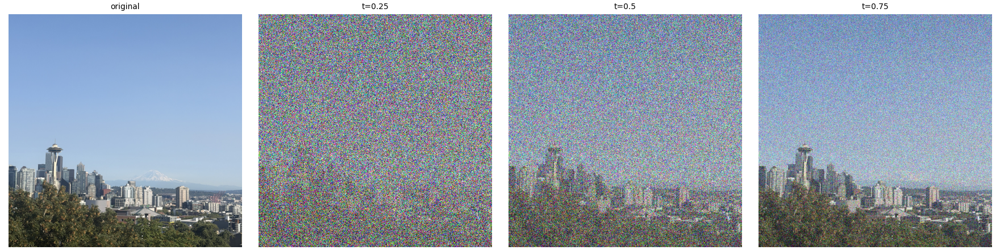
Original, t = 0.25, t = 0.50, t = 0.75
A1.2 Classical Denoising
As a baseline I restored the image amplitude by dividing by t, since \[ \frac{x_t}{t} = x_1 + \frac{1 - t}{t}\,\epsilon, \] and then applied a Gaussian blur. I tried sigma = 1, 2, 4, 8, 16 and kept the sigma with the lowest mean squared error against the clean image. Each image shows the noisy input next to its best blurred version.
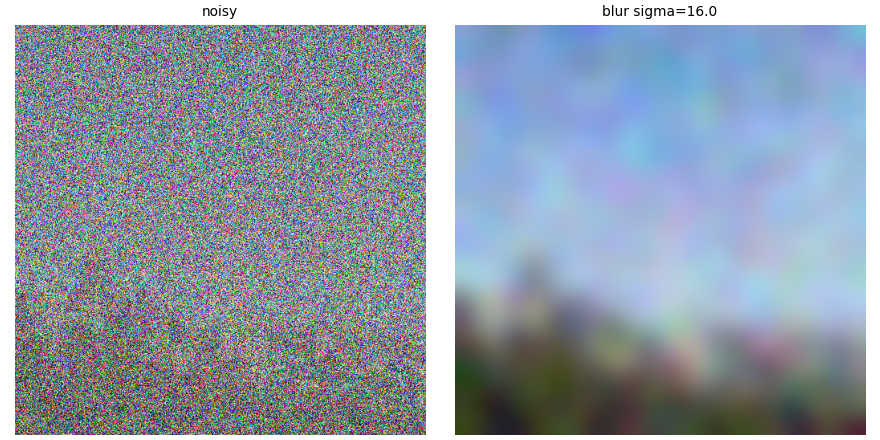
t = 0.25
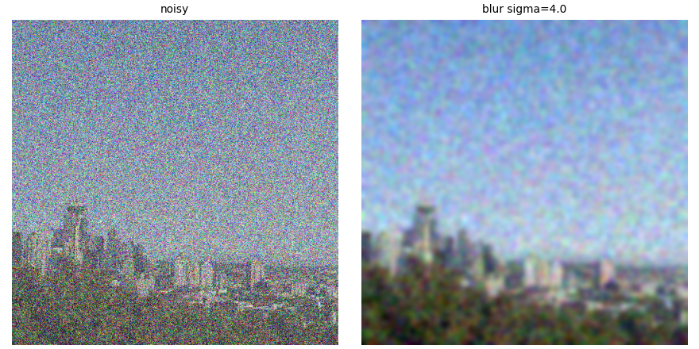
t = 0.50
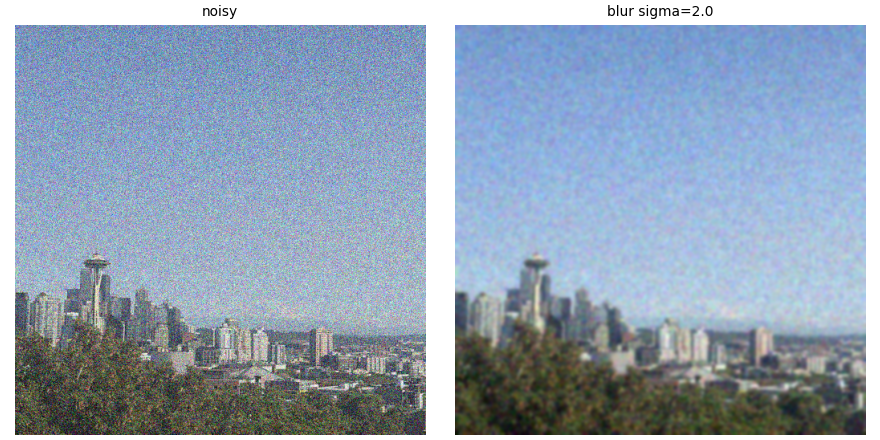
t = 0.75
A1.3 One-Step Denoising
The pretrained model predicts a velocity, not noise. I extrapolate from \(x_t\) to the clean endpoint with one prediction, using the embedding \(c\) for "a high quality photo": \[ \hat{x}_1 = x_t + (1 - t)\, v_\theta(x_t, t, c). \]
Original, noisy input, and one-step estimate for each t:
t = 0.25
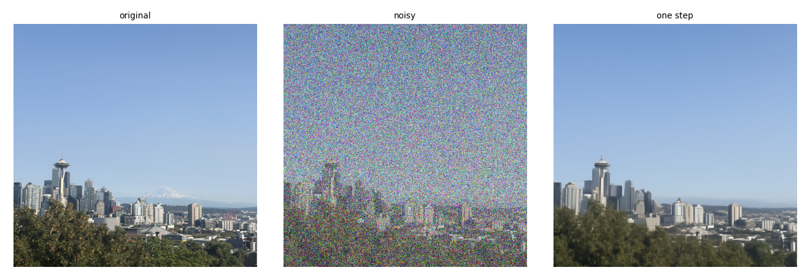
t = 0.50
t = 0.75
Even from a single step, the result is much better than the output of 1.2.
A1.4 Visualizing Velocity
The update the model adds in 1.3 is \((1 - t)\,\hat{v}\). Since I know the clean image, the ground-truth update is \((1 - t)\,v_{gt} = x_1 - x_t\), where \(v_{gt} = x_1 - \epsilon\). The error map is the per-pixel RMS difference, averaged over the RGB channels: \[ E_t = \sqrt{\operatorname{mean}_{\text{RGB}}\!\left[\big((1 - t)(\hat{v} - v_{gt})\big)^2\right]}. \]
Original image (shown once):
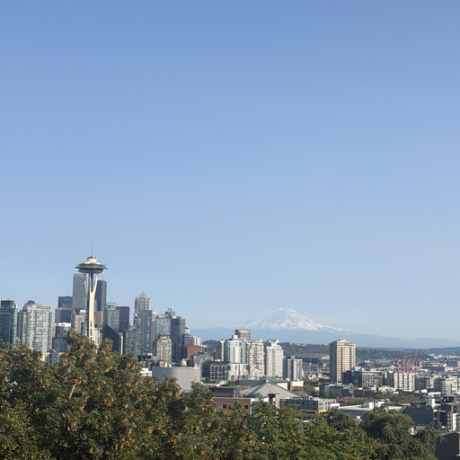
Original
For each t: noisy image, predicted update, ground-truth update, and error heatmap.
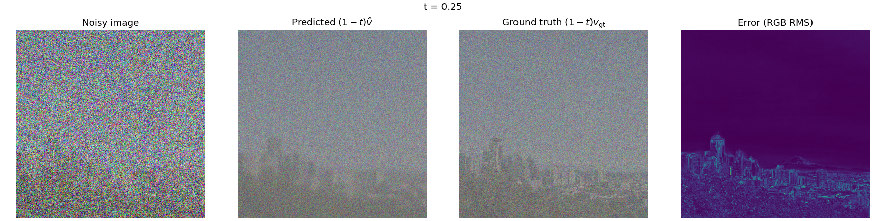
t = 0.25
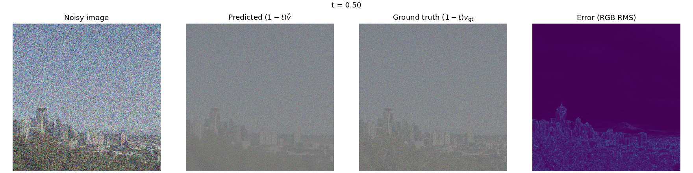
t = 0.50
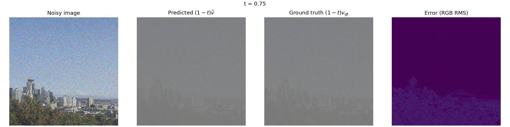
t = 0.75
The error is brightest at t = 0.25 and gets lighter as t grows, so by t = 0.75 it is the smallest.
A1.5 Iterative Denoising with Euler Sampling
One-step denoising is inaccurate because the learned velocity changes along the path. Instead I take small Euler steps, \(x_{t+h} = x_t + h\, v(x_t, t)\), and recompute the velocity after every update. I used h = 0.02 and shortened the last step when needed so the sampler ends exactly at t = 1. Starting from the saved t = 0.50 noisy image, that is 25 Euler updates.
I tested it on a constant velocity field, where the answer is known exactly, starting at t = 0 (50 full steps), t = 0.5 (25 steps), and t = 0.93 (a shortened final step).
The denoising trajectory: the initial state, every fifth update, and the final image, labeled by time.
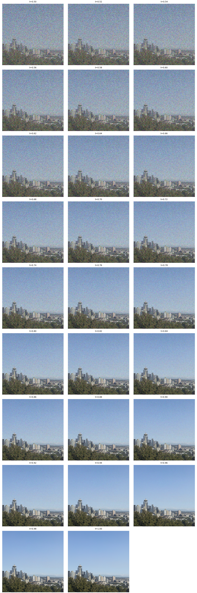
Euler trajectory from t = 0.50
Comparison using the same noisy input: original, Gaussian blur, one-step denoising, and iterative Euler denoising.
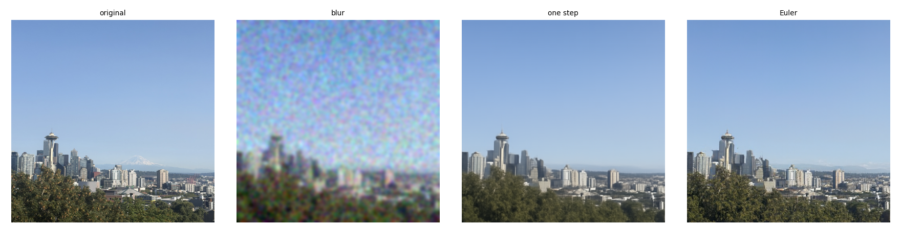
Original vs. blur vs. one-step vs. Euler
All methods start from the t = 0.50 noisy image. The Gaussian blur removes some of the grain but leaves speckles across the image and removes the details, so the buildings become blurry shapes. One-step denoising gives a significantly better image with the right layout and colors, but the details are still too smooth. The best result is Euler's, with the sharpest details and closest to the original image. It is not perfect, though: around the Space Needle there is a slightly odd structure, most likely because of the fine, closely spaced straight lines there. The mountain in the background is also barely visible.
A1.6 Sampling from Pure Noise
Starting from pure Gaussian noise at t = 0 and running the sampler to t = 1 with the prompt "a high quality photo" generates new images. Here are five samples from five different noise seeds (180 to 184), without guidance. I reuse the same five noises in Section A2.

Five samples, "a high quality photo", no guidance

Seed 180

Seed 181

Seed 182
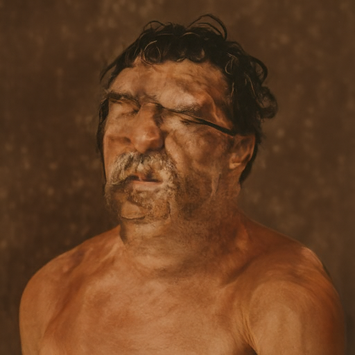
Seed 183

Seed 184
Part A, Section 2: Conditional Generation and Guidance
A2.1 Classifier-Free Guidance (CFG)
Classifier-free guidance evaluates the model twice at the same x_t and t. One evaluation is with the prompt (v_c) and one with the empty-string embedding (v_u). The guided velocity is \[ v_{cfg} = v_c + w\,(v_c - v_u), \] with \(w = 7\), so \(w = 0\) is ordinary conditional sampling. I checked that w = 0 reproduces the conditional prediction.
Five CFG samples with "a high quality photo", w = 7, using the same initial noises as 1.6:

Sample 0

Sample 1

Sample 2
Sample 3

Sample 4
The images are clearly sharper and have more human-like features, and facial features are much easier to recognize. However, we lose diversity in angles and perspectives. Before there were side shots and side profiles; in the guided ones we mostly see front-facing portrait-style images.
Part A, Section 3: Creative Applications
Throughout this section I use h = 0.02, w = 7, and the empty prompt for the unconditional prediction.
A3.1 Image-to-Image Editing
Following SDEdit, I add noise to a real image up to a starting time t_start with the forward process, then run the CFG Euler sampler from t_start to 1 with "a high quality photo". A smaller starting time means more noise and a bigger edit, and a larger one keeps more of the original. I used starting times [0.02, 0.04, 0.06, 0.10, 0.14, 0.25, 0.5] and the same noise tensor (seed 180) for every image and starting time.
The Campanile

Campanile edits
Two of my own test images
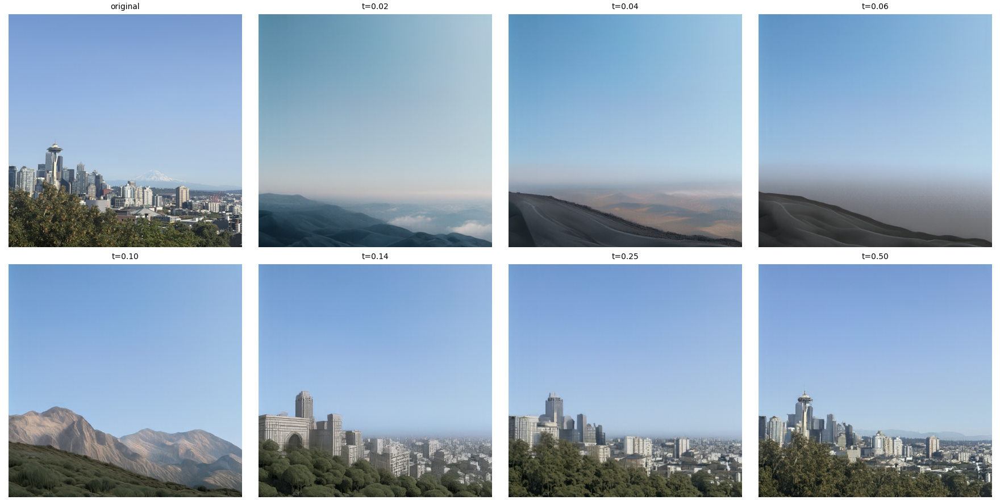
Kerry Park, Seattle
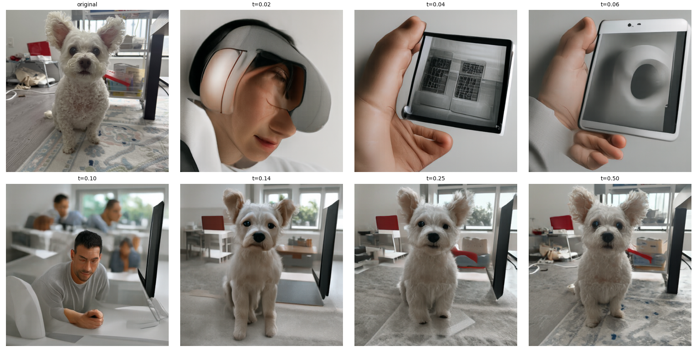
My dog
The edits get closer to the original as t_start increases, and the shapes and colors form more clearly. The Seattle image quickly gets the general background, but my dog photo, which has more extra background, struggles more to recreate the image.
Editing hand-drawn and web images
The same procedure works well on non-realistic images, because the noising and denoising projects them onto the manifold of natural images. Below are one web image (a watercolor landscape) and two hand-drawn images (created by me), each edited at the same starting times.
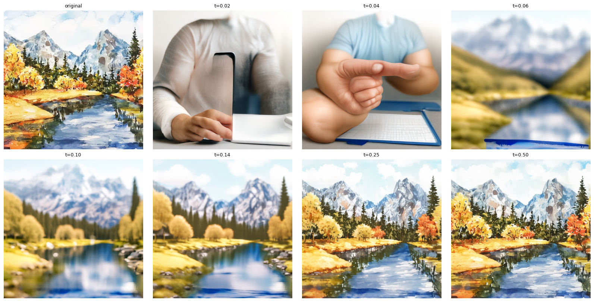
Web image: watercolor landscape
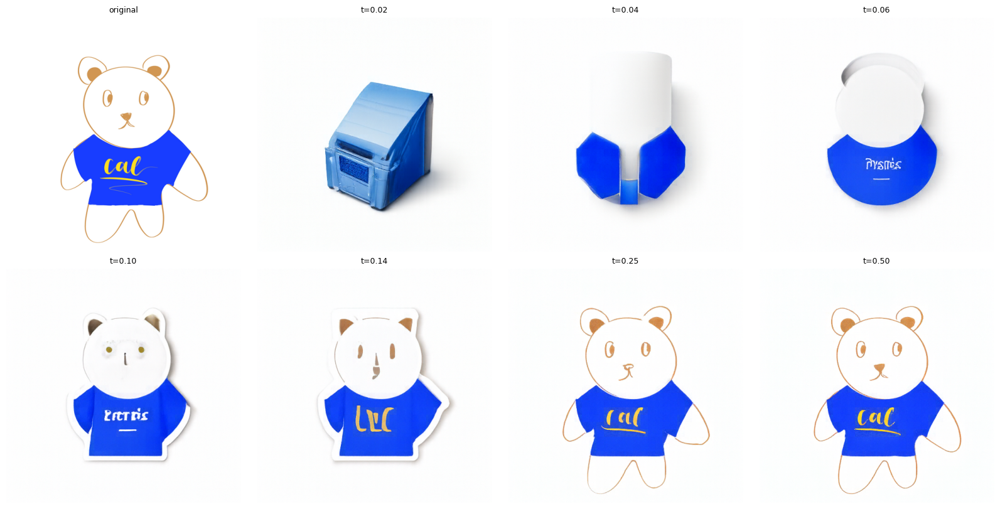
Hand-drawn image 1: Cal bear
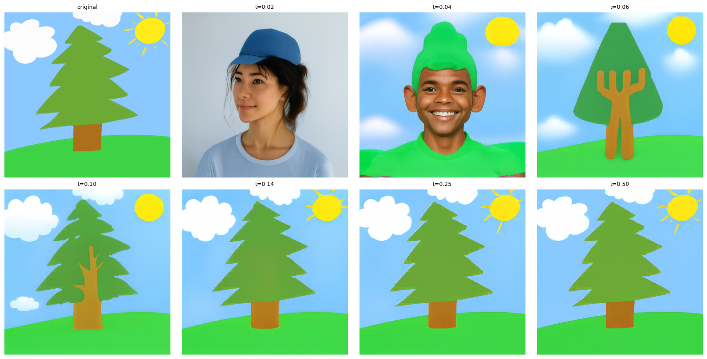
Hand-drawn image 2: Tree
A3.2 Text-Guided Image Editing
Same procedure as 3.1, but "a high quality photo" is replaced by a prompt describing the desired edit. Small starting times follow the prompt, and large ones follow the original image.
Campanile
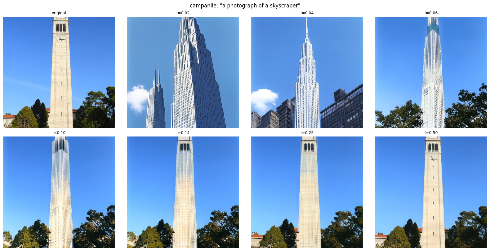
Prompt: "a photograph of a skyscraper"
Test image 1
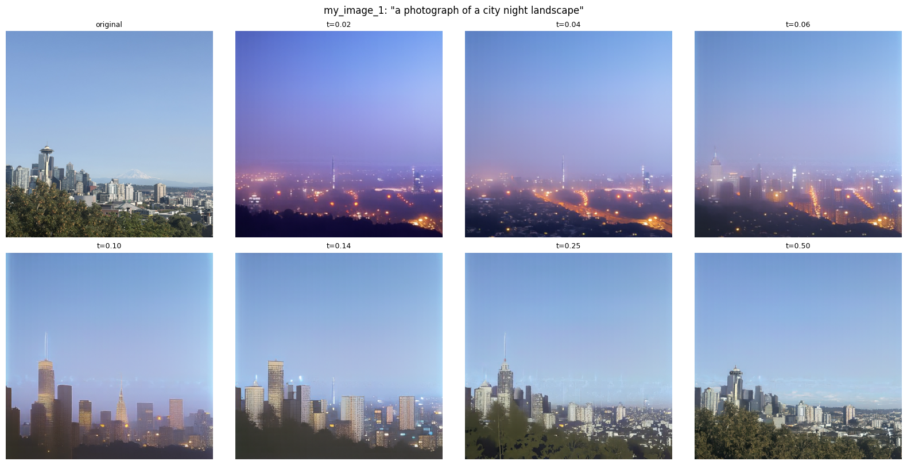
Prompt: "a photograph of a city night landscape"
Test image 2
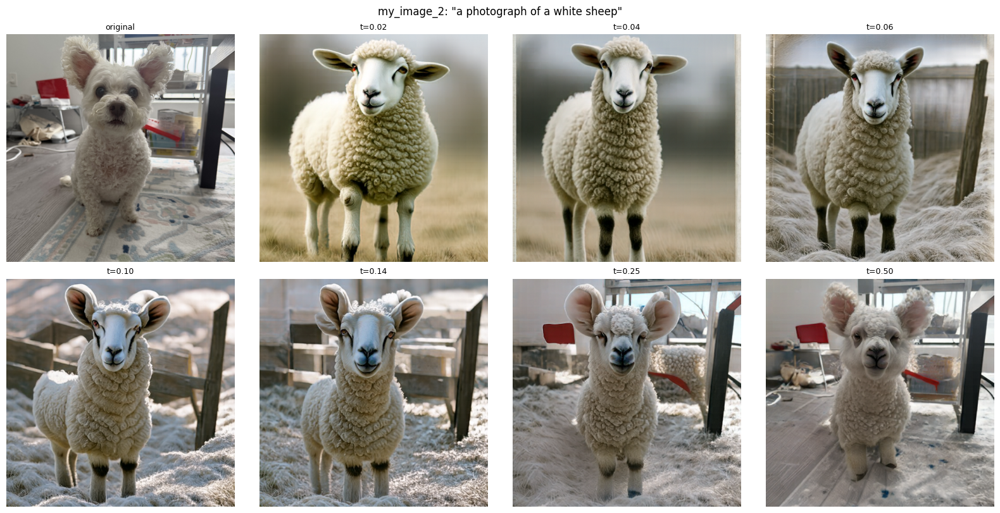
Prompt: "a photograph of a white sheep"
One thing to note is that my dog turned into a sheep face and does not return to the original animal.
A3.3 Visual Anagrams
A visual anagram looks like one thing upright and another when rotated 180 degrees. At every Euler step I compute the CFG velocity of the image with prompt A, rotate the image, compute the CFG velocity with prompt B, rotate that velocity back, and average the two: \[ v_1 = v_{cfg}(x_t, t, p_1), \qquad v_2 = F\big(v_{cfg}(F(x_t), t, p_2)\big), \qquad v = \frac{v_1 + v_2}{2}, \] where \(F\) rotates by 180 degrees. I looped through 6 different seeds to find a good output, and the seed is listed with each image.
Illusion 1
Upright prompt: "an oil painting of a deer" | Rotated prompt: "an oil painting of frog" | Seed: 183
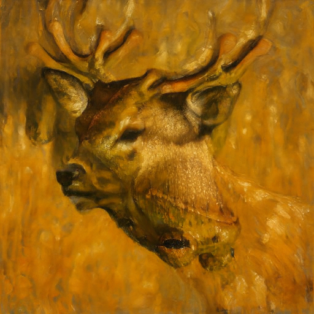
Upright: "an oil painting of a deer"
Rotated 180°: "an oil painting of frog"
Illusion 2
Upright prompt: "a litograph of a vase of flowers" | Rotated prompt: "a litograph of a woman's face" | Seed: 182
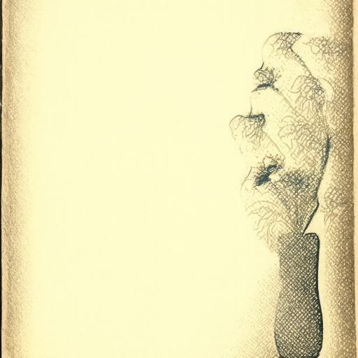
Upright: "a litograph of a vase of flowers"
Rotated 180°: "a litograph of a woman's face"
A3.4 Hybrid Images
Adapting Factorized Diffusion, I predict two CFG velocities at the same x_t and t, and keep the low frequencies of prompt A and the high frequencies of prompt B: \[ v = f_{\text{lowpass}}(v_a) + f_{\text{highpass}}(v_b), \qquad f_{\text{highpass}}(v) = v - f_{\text{lowpass}}(v). \] The low-pass is a Gaussian blur with kernel size 265 and sigma 16 at 512 x 512. Prompt A is the distant, low-frequency subject and prompt B is the close-up, high-frequency subject. The composite velocity is used in the Euler update. I also ran 6 different seeds to find the best output for each image.
Each hybrid is shown at full size (the close-up subject should dominate) and reduced to 64 x 64 (the distant subject should appear).
Hybrid 1
Distant prompt: "a lithograph of a large owl's face" | Close prompt: "a lithograph of a autumn forest" | Seed: 181
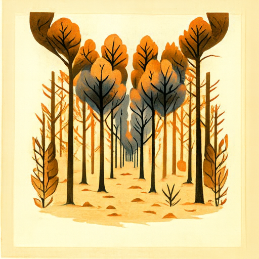
Full size
64 x 64
Hybrid 2
Distant prompt: "a lithograph of a lighthouse" | Close prompt: "a lithograph of a field of flowers" | Seed: 180
Full size
64 x 64
Part B, Section 1: Training a Single-Step Denoising UNet
B1.2 Using the UNet to Train a Denoiser
The denoiser takes a noisy image \(z = x + \sigma\,\epsilon\) with \(\epsilon \sim \mathcal{N}(0, I)\) and is trained to output the clean digit \(x\) with an L2 loss. Here is the noising process for several values of \(\sigma\), on one MNIST digit. Higher the \(\sigma\) is noisier the image is.
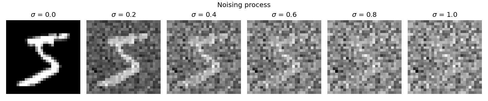
Noising process, σ from 0.0 to 1.0
B1.2.1 Training
I trained the denoiser on the MNIST training set (shuffled) with σ = 0.5, batch size 256, hidden dimension D = 128, Adam with learning rate 1e-4, for 5 epochs. New noise is drawn for every batch.
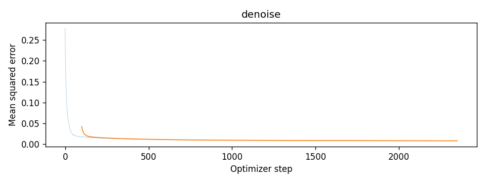
Training loss (every iteration, with a 100-step moving average)
Test-set results with σ = 0.5 after epoch 1 and epoch 5 (top row: noisy input, bottom row: denoised output):
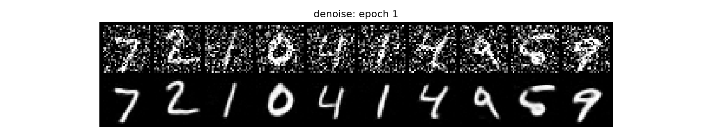
After epoch 1
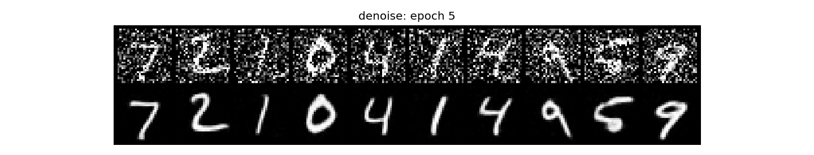
After epoch 5
B1.2.2 Out-of-Distribution Testing
The model was only trained at σ = 0.5. Here is the same test digit noised with different values of σ and denoised by the trained model (top row: noisy, bottom row: denoised, σ = 0.0, 0.2, 0.4, 0.5, 0.6, 0.8, 1.0).
σ = 0.0, 0.2, 0.4, 0.5, 0.6, 0.8, 1.0
The denoiser works well for every σ from 0.0 up to about 0.6. At σ = 0.0 it returns the clean 7, and for σ = 0.2 to 0.6 the output is a clean, correctly shaped 7 even though the noisy inputs look more and more scrambled. At σ = 0.8 the output starts to break down as the 7 gets thicker, the strokes are distorted, and stray marks show up around it.
B1.2.3 Denoising Pure Noise
Next I trained a fresh UNet (D = 128, Adam, learning rate 1e-4, batch size 256, 5 epochs) where the input is pure Gaussian noise and the target is still a clean digit.
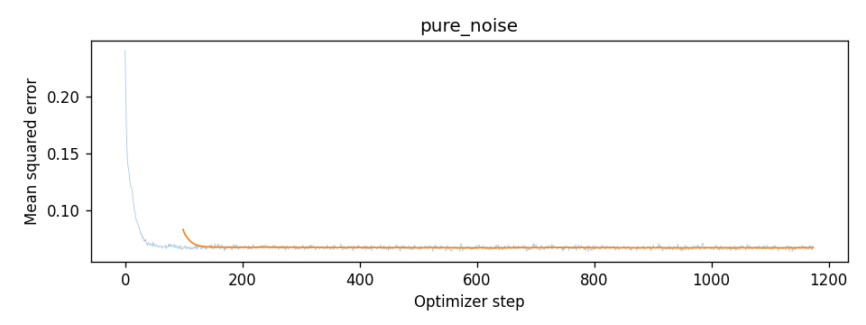
Training loss
Samples on pure noise after epoch 1 and epoch 5 (top row: input noise, bottom row: output):
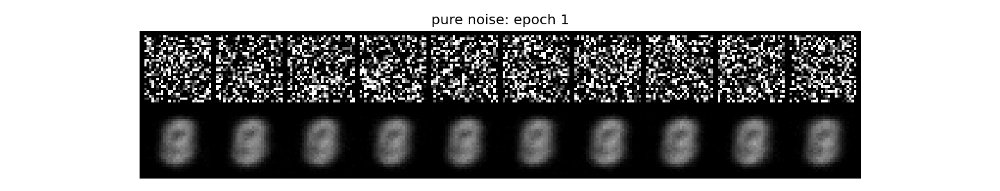
After epoch 1
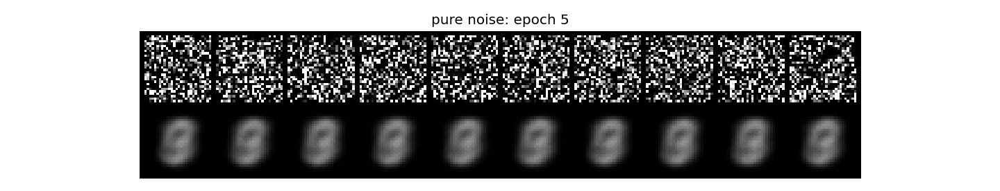
After epoch 5
The outputs all look like nearly the same blurry digit-like blob, no matter what the input noise was. This happens because the noise carries no information about which digit it came from, so the model cannot do better than predicting the same thing for every input. With an L2 loss, the output that minimizes the expected error is the mean of the training distribution, which is the average image of all MNIST digits. The model learns to output that average, which is why we see a smooth, blurry shape that is a mix of many digits.
The outputs look almost the same at epoch 1 and epoch 5. One blurry, centered blob that resembles an average of many digits, mainly 0 and 8 like shape though, identical for every input noise. By epoch 5 the blob is a little smoother and slightly better defined, with fewer speckles, but it does not turn into any particular digit.
Part B, Section 2: Training a Flow Matching Model
B2.2 Training the Time-Conditioned UNet
The model takes a noisy image and a time \(t \in [0, 1]\) and predicts the velocity \(x_1 - x_0\). Training follows the flow matching
algorithm: draw \(x_0 \sim \mathcal{N}(0, I)\) and \(t \sim U(0, 1)\), form
\(x_t = (1 - t)\,x_0 + t\,x_1\), and regress the UNet output onto \(x_1 - x_0\). I used batch size 64, D = 64,
Adam with initial learning rate 1e-2, and an exponential learning rate decay with
\(\gamma = 0.1^{1/\text{num_epochs}}\), calling scheduler.step() once per epoch, for 10 epochs.
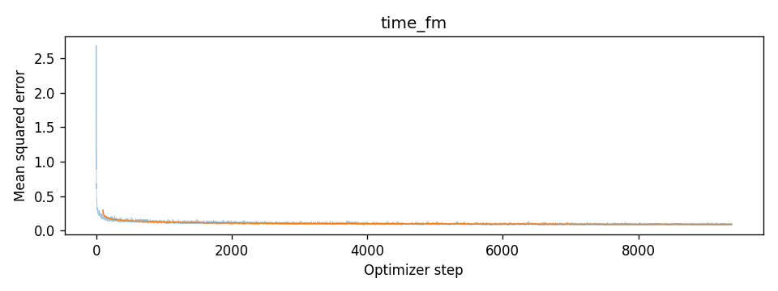
Time-conditioned training loss
B2.3 Sampling from the Time-Conditioned UNet
Samples after 1, 5 and 10 epochs of training:
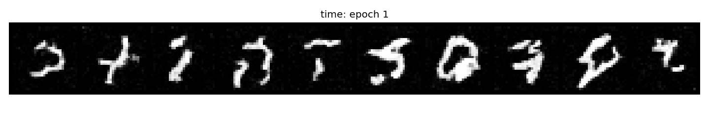
Epoch 1
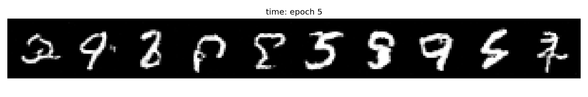
Epoch 5
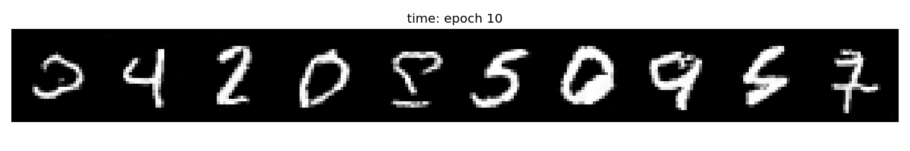
Epoch 10
The samples improve from epoch 1 to epoch 10. At first it looks like blobs/strokes with no order. However as we go into higher epoch, the model is able to generate images that look more like numbers, like the number 4, 2, 0, 5, 9, and 7. However there are some images where the number is not clear.
B2.5 Training the Class-Conditioned UNet
The class-conditioned UNet also takes a one-hot class vector, which is set to zero 10% of the time during training so the same model learns an unconditional prediction for classifier-free guidance. Settings are the same as 2.2: batch size 64, D = 64, Adam with initial learning rate 1e-2, exponential decay with the same \(\gamma\), 10 epochs.
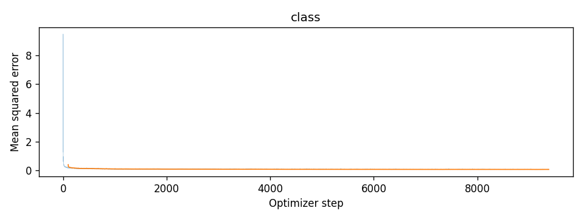
Class-conditioned training loss
The loss drops sharply in the first few hundred steps, then levels off at about 0.1 for the rest of training.
B2.6 Sampling from the Class-Conditioned UNet
I sample with 300 Euler steps and classifier-free guidance with \(\gamma = 5.0\): \(u = u_{\text{uncond}} + \gamma\,(u_{\text{cond}} - u_{\text{uncond}})\). Each grid shows four samples of each digit 0 to 9, with the same random seed so the results can be compared.
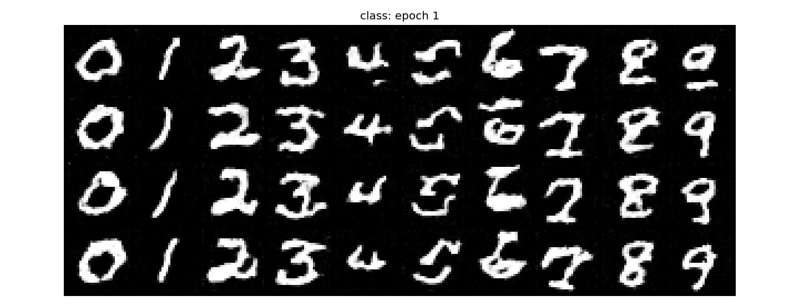
Epoch 1
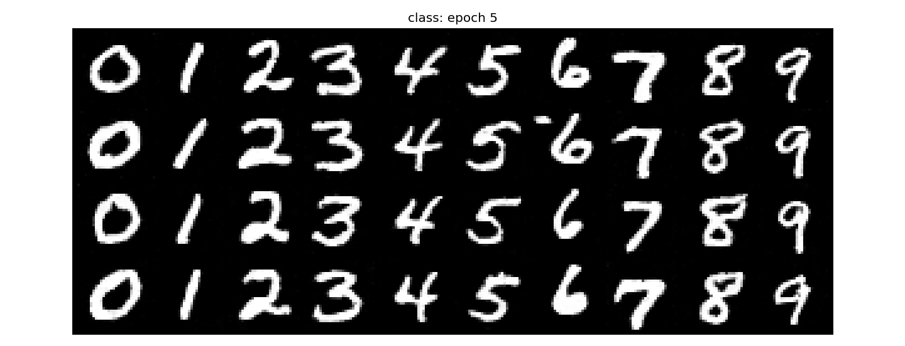
Epoch 5
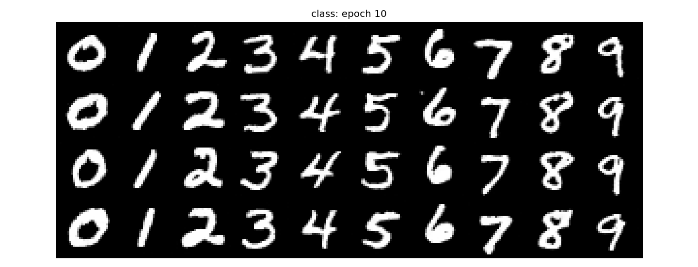
Epoch 10
Between epochs we can clearly see the numbers being better, with a significant jump from epoch 1 to 5. The numbers are more defined with more sure lines rather than random stretches. Furthermore we see that the digits match their respecitve classes.
Without the Learning Rate Scheduler
I trained a second class-conditioned model with the scheduler removed and a constant Adam learning rate of 1e-3, with everything else the same. With the scheduler, the learning rate started at 1e-2 and went down to about 1e-3 by the end. A constant 1e-2 would keep taking large steps for the entire run, so I lowered the learning rate from 1e-2 to a constant 1e-3, the value the scheduler ends at.
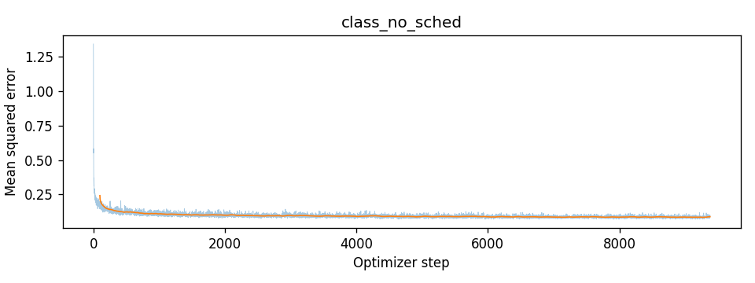
Training loss without a scheduler
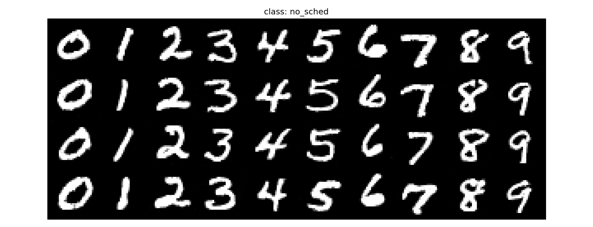
Samples after 10 epochs, no scheduler
The no-scheduler loss starts lower, at about 1.3 compared with about 9.5 for the scheduled run, because the learning rate is smaller, and both end near 0.1. Its curve stays noisier because the learning rate never goes down. The no-scheduler samples look just as good as the scheduled model's epoch 10 samples. All the digits match their respective classes, with clean strokes. The two images are very simliar with a small difference of a speck in scheduled, so a constant learning rate of 1e-3 was enough to replace the scheduler in this setting.